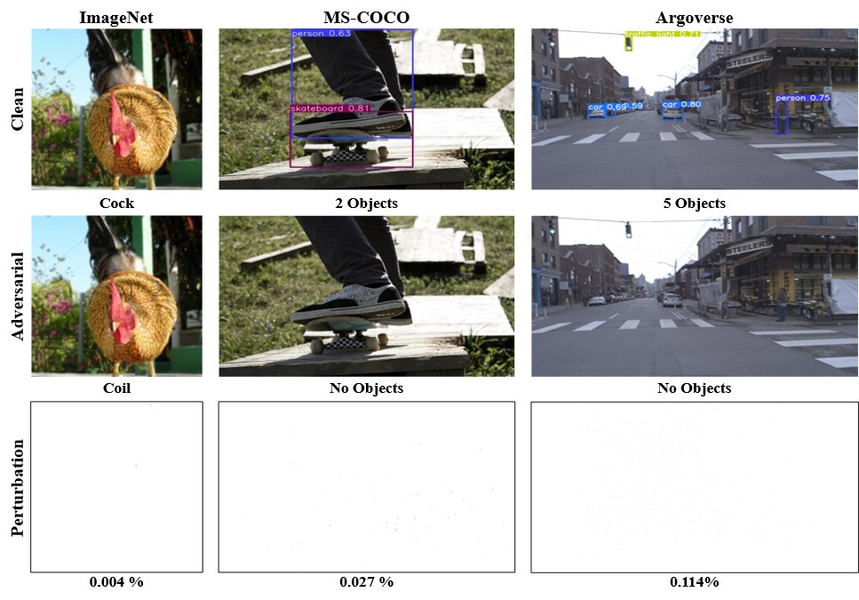
Attacking a Driving Sequence
RFPAR attacks YOLOv8 frame by frame on an Argoverse driving sequence.
Abstract
It is well known that query-based attacks tend to have relatively higher success rates in adversarial black-box attacks. While research on black-box attacks is actively being conducted, relatively few studies have focused on pixel attacks that target only a limited number of pixels. In image classification, query-based pixel attacks often rely on patches, which heavily depend on randomness and neglect the fact that scattered pixels are more suitable for adversarial attacks. Moreover, to the best of our knowledge, query-based pixel attacks have not been explored in the field of object detection.
To address these issues, we propose a novel pixel-based black-box attack called Remember and Forget Pixel Attack using Reinforcement Learning (RFPAR), consisting of two main components: the Remember and Forget processes. RFPAR mitigates randomness and avoids patch dependency by leveraging rewards generated through a one-step RL algorithm to perturb pixels. RFPAR effectively creates perturbed images that minimize the confidence scores while adhering to limited pixel constraints. Furthermore, we advance our proposed attack beyond image classification to object detection, where RFPAR reduces the confidence scores of detected objects to avoid detection.
Experiments on the ImageNet-1K dataset for classification show that RFPAR outperformed state-of-the-art query-based pixel attacks. For object detection, using the MS-COCO dataset with YOLOv8 and DDQ, RFPAR demonstrates comparable mAP reduction to state-of-the-art query-based attack while requiring fewer queries. Further experiments on the Argoverse dataset using YOLOv8 confirm that RFPAR effectively removed objects on a larger scale dataset.
Over state-of-the-art query-based pixel attacks, with 26.0% fewer queries and a 41.1% smaller L0 norm.
An average mAP reduction of 0.29 on YOLO, comparable to state-of-the-art query-based attacks.
Against YOLOv8 on the Argoverse-1.1 validation set, a larger-scale driving dataset.
Remember and Forget
Forgetting on purpose keeps the agent from overfitting to one exploration path.
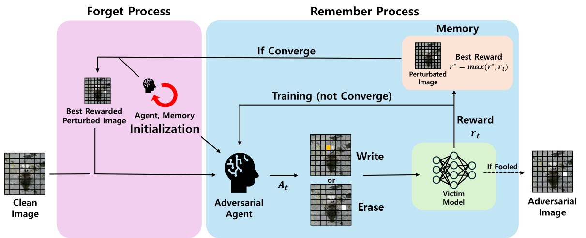
Remember. A one-step RL agent takes the image as input and decides which pixels to perturb and how. Each perturbed image is sent to the black-box model, and the drop in its confidence score becomes the reward. A memory keeps only the highest reward and the image that earned it.
Forget. When the highest reward stops changing for a while, RFPAR resets the agent and its memory and feeds the best perturbed image back in as the new input. The Remember process then starts again from that image.
The cycle repeats until the attack succeeds or the cycle budget runs out. For object detection, the reward comes from lowering the confidence of the detected objects until they are no longer detected.
Qualitative Results
Browse the paper's appendix examples.
Image classification: ResNeXt50 on ImageNet
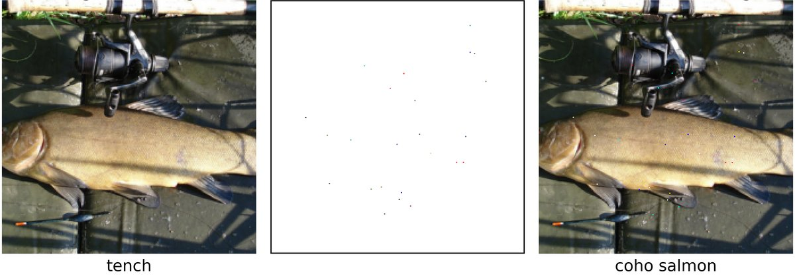
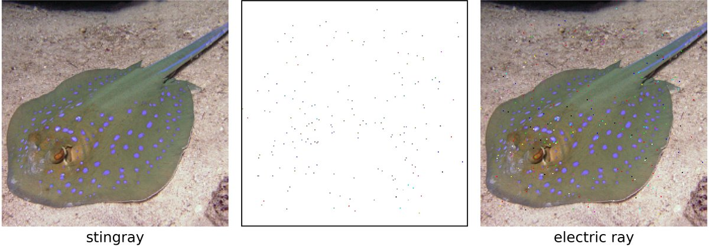
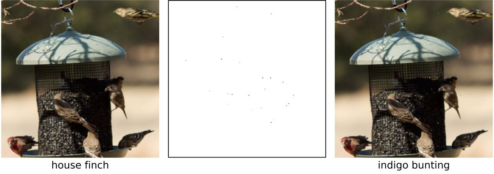
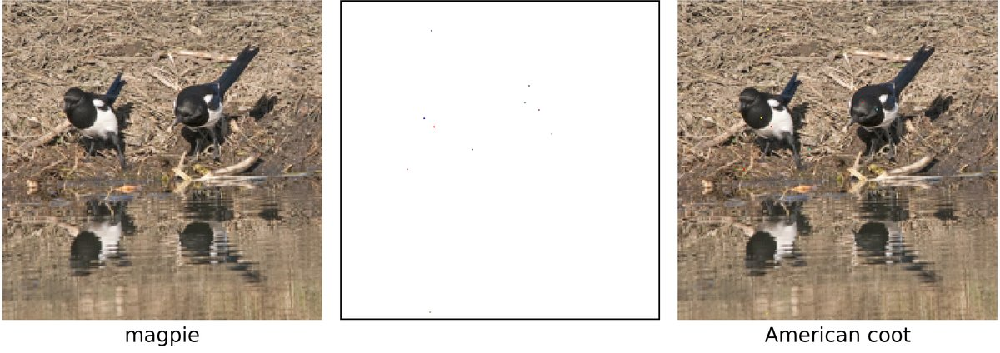
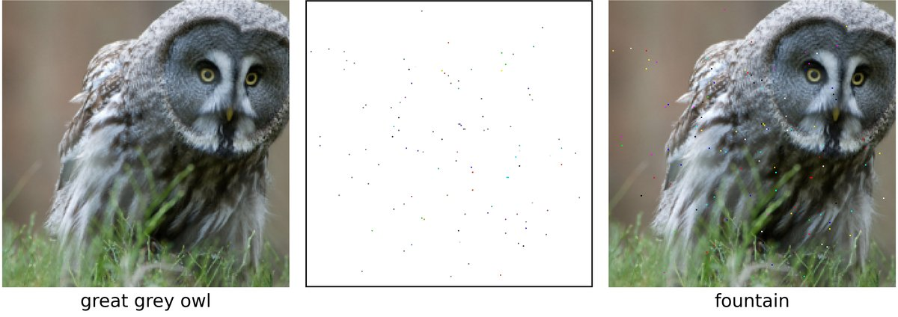
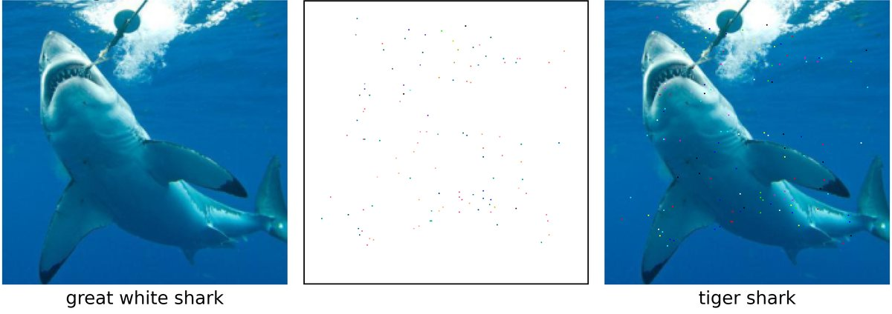
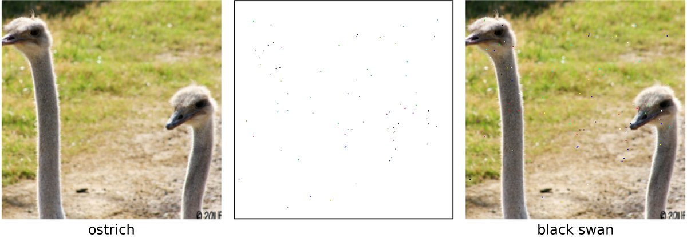
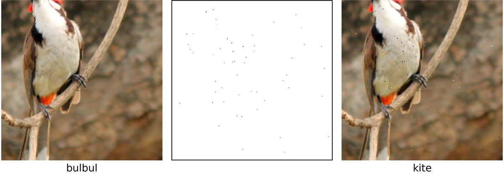
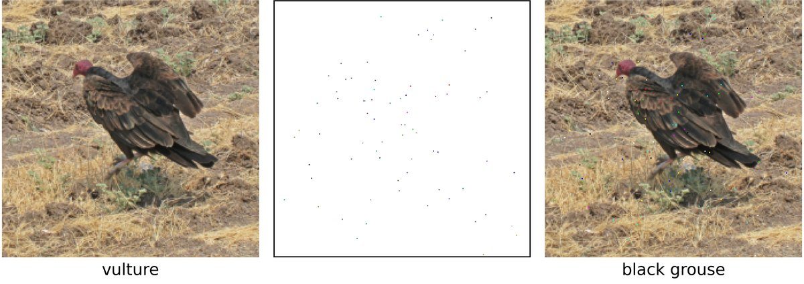
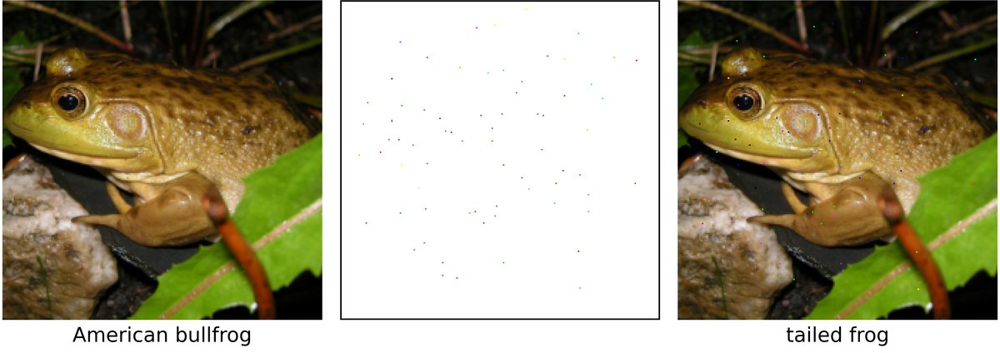
Object detection: YOLOv8n on MS-COCO
Ablation
Memory gives the largest gain. Initialization helps further once memory is in place, but has little effect on its own.
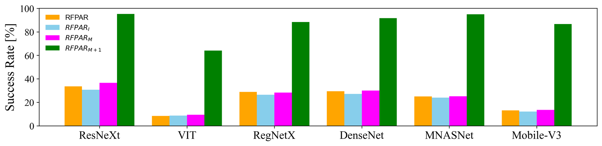
BibTeX
@inproceedings{song2024amnesia,
title = {Amnesia as a Catalyst for Enhancing Black Box Pixel Attacks in Image Classification and Object Detection},
author = {Song, Dongsu and Ko, Daehwa and Jung, Jay Hoon},
booktitle = {Advances in Neural Information Processing Systems},
volume = {37},
year = {2024}
}